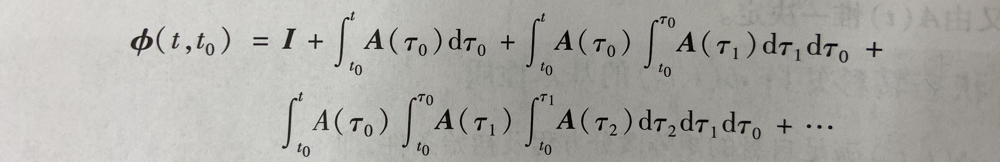

在建立了状态空间表达式之后，求解状态变量的过程
线性定常系统齐次方程的求解
线性齐次的表达式如下，特征为没有输入变量 $u$
课本上对于这个问题的求解是先假设 $x(t)$ 的表达式为幂级数的和，再代回原方程求解待定系数，得到了
前面长长的系数可以写成矩阵指数 $e^{At}$ ，这个矩阵指数也被称作状态转移矩阵 $\Phi(t)$ ，代表从0时刻的状态进行了转移
线性定常状态转移矩阵的性质
有几条比较重要的性质
- 在 $t=0$ 时状态转移矩阵为 $I$
- 可逆性，$\Phi(t) = (\Phi(-t))^{-1}，\Phi(t)\Phi(-t) = I$
- 结合律，状态转移矩阵可以连乘
- 不可交换性，连乘顺序不可改变
线性定常状态转移矩阵的求法
有四种求法，最重要的是利用拉氏变换求解
- 根据定义，计算无穷幂级数，计算机也只能计算有限项的近似解
应用拉普拉斯变换，转换到频域化简，再反变换求解
使用凯莱-哈密顿定理，求解n个系数，再求和
变换为对角阵，利用 $e^{Q\Lambda Q^{-1}} = Qe^{\Lambda} Q^{-1}$ 求解
第四种方法对于不能对角化的阵，处理方式与前一章相同，即约当型或者分虚实部处理
线性定常系统非齐次方程的解
非齐次方程指的是有输入向量（不为零）的系统
标准解为
包含两部分，自由运动和强迫运动
线性定常系统的离散化
对于连续系统
可以将其离散化
其中
线性时变系统
线性时变系统的状态转移矩阵与初始时刻有关，满足矩阵微分方程
时变系统状态转移矩阵的计算很复杂，需要多次积分，而被积项还需要用到分布积分等技巧，二阶以上十分不好求解
